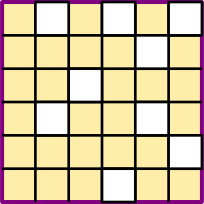
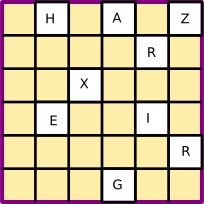
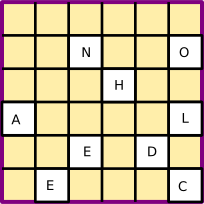
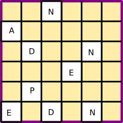
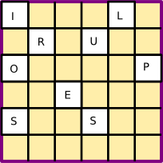

Le chiffre de Mathias Sandorf
Mathias Sandorf est un roman de Jules Verne publié en 1885. Mathias Sandorf est un comte hongrois qui, avec l'aide de deux amis (Bathory et Zathmar), organise un complot afin de redonner toute sa gloire à la Hongrie, de lui redonner sa liberté politique. Mais, à cause d'un espion à la solde d'un banquier véreux, le complot échoue… La cryptographie joue un grand rôle dans les premiers chapitres de ce roman. Dans le premier chapitre, deux drôles affamés, Sarcany et Zirone, interceptent un message chiffré sur le pigeon voyageur qu'ils s'apprêtent à dévorer...
« Un pigeon voyageur ! dit-il.
– Eh bien, voilà un voyageur qui aura fait là son dernier voyage ! répondit Sarcany.
– Sans doute, reprit Zirone, et tant pis pour ceux auxquels est destiné le billet attaché sous son aile…
– Un billet ? s’écria Sarcany. Attends, Zirone, attends ! Cela mérite un sursis ! »
Et il arrêta la main de son compagnon, qui allait se refermer sur le cou de l’oiseau. Puis, prenant le sachet que venait de détacher Zirone, il l’ouvrit et en retira un billet écrit en langue chiffrée.
Le billet ne contenait que dix-huit mots, disposés sur trois colonnes verticales, comme suit :
– Et alors, répondit Zirone, ce pigeon serait le représentant du hasard, après lequel nous avons tant couru depuis ce matin ! Sang Dieu ! moi qui allais l’étrangler !… Après tout, l’important, c’est d’avoir le message, et rien n’empêchera de faire cuire le messager…
– Ne te hâte pas, Zirone, reprit Sarcany, qui sauva encore une fois la vie de l’oiseau. Peut-être, grâce à ce pigeon, avons-nous le moyen de connaître quel est le destinataire du billet, à la condition, toutefois, qu’il demeure à Trieste ?
– Et après ? Cela ne te promettra pas de lire ce qu’il y a dans ce billet, Sarcany !
– Non, Zirone.
– Ni de savoir d’où il vient !
– Sans doute ! Mais, des deux correspondants, si je parviens à connaître l’un, j’imagine que cela pourra me servir à connaître l’autre ! Donc, au lieu de tuer cet oiseau, il faut, au contraire, lui rendre ses forces, afin qu’il puisse arriver à destination !
– Avec le billet ? demanda Zirone.
– Avec le billet, dont je vais prendre une copie exacte, et que je garderai jusqu’au moment où il conviendra d’en faire usage ! » Sarcany tira alors un carnet de sa poche, et, au crayon, il prit un fac-similé du billet. Sachant que dans la plupart des cryptogrammes, il ne faut rien négliger de leur arrangement matériel, il eut soin de bien conserver l’exacte disposition des mots l’un par rapport à l’autre. Puis, cela fait, il remit le fac-similé dans son carnet, le billet dans le petit sachet, et le petit sachet sous l’aile du pigeon.
Dans le chapitre 2, on retrouve Étienne Bathory et Ladislas Zathmar dans le cabinet de travail de ce dernier. Ils attendent l'arrivée du comte
Mathias Sandorf.
– Eh bien, voilà un voyageur qui aura fait là son dernier voyage ! répondit Sarcany.
– Sans doute, reprit Zirone, et tant pis pour ceux auxquels est destiné le billet attaché sous son aile…
– Un billet ? s’écria Sarcany. Attends, Zirone, attends ! Cela mérite un sursis ! »
Et il arrêta la main de son compagnon, qui allait se refermer sur le cou de l’oiseau. Puis, prenant le sachet que venait de détacher Zirone, il l’ouvrit et en retira un billet écrit en langue chiffrée.
Le billet ne contenait que dix-huit mots, disposés sur trois colonnes verticales, comme suit :
Du lieu de départ et du lieu de destination de ce billet, rien. Quant à ces dix-huit mots, composés chacun d’un égal nombre de lettres, serait-il possible d’en comprendre le sens sans en connaître le chiffre ? C’était peu probable, à moins d’être un habile déchiffreur, – et encore fallait-il que le billet ne fût pas « indéchiffrable ! » Devant ce cryptogramme, qui ne lui apprenait rien, Sarcany, d’abord très désappointé, demeura très perplexe. Le billet contenait-il quelque avis important et, surtout, de nature compromettante ? on pouvait, on devait le croire, rien qu’aux précautions prises pour qu’il ne pût être lu, s’il tombait en d’autres mains que celles du destinataire. N’employer pour correspondre, ni la poste ni le fil télégraphique, mais bien cet extraordinaire instinct du pigeon voyageur, indiquait qu’il s’agissait là d’une affaire pour laquelle on voulait un secret absolu. « Peut-être, dit Sarcany, y a-t-il dans ces lignes un mystère qui ferait notre fortune !ihnalz zaemen ruiopn
arnuro trvree mtqssl
odxhnp estlev eeuart
aeeeil ennios noupvg
spesdr erssur ouitse
eedgnc toeedt artuee
– Et alors, répondit Zirone, ce pigeon serait le représentant du hasard, après lequel nous avons tant couru depuis ce matin ! Sang Dieu ! moi qui allais l’étrangler !… Après tout, l’important, c’est d’avoir le message, et rien n’empêchera de faire cuire le messager…
– Ne te hâte pas, Zirone, reprit Sarcany, qui sauva encore une fois la vie de l’oiseau. Peut-être, grâce à ce pigeon, avons-nous le moyen de connaître quel est le destinataire du billet, à la condition, toutefois, qu’il demeure à Trieste ?
– Et après ? Cela ne te promettra pas de lire ce qu’il y a dans ce billet, Sarcany !
– Non, Zirone.
– Ni de savoir d’où il vient !
– Sans doute ! Mais, des deux correspondants, si je parviens à connaître l’un, j’imagine que cela pourra me servir à connaître l’autre ! Donc, au lieu de tuer cet oiseau, il faut, au contraire, lui rendre ses forces, afin qu’il puisse arriver à destination !
– Avec le billet ? demanda Zirone.
– Avec le billet, dont je vais prendre une copie exacte, et que je garderai jusqu’au moment où il conviendra d’en faire usage ! » Sarcany tira alors un carnet de sa poche, et, au crayon, il prit un fac-similé du billet. Sachant que dans la plupart des cryptogrammes, il ne faut rien négliger de leur arrangement matériel, il eut soin de bien conserver l’exacte disposition des mots l’un par rapport à l’autre. Puis, cela fait, il remit le fac-similé dans son carnet, le billet dans le petit sachet, et le petit sachet sous l’aile du pigeon.
Depuis le départ du comte Sandorf, d’autres correspondances avaient été échangées entre Trieste et Bude, et plusieurs billets chiffrés étaient arrivés par pigeons. En ce moment même, Ladislas Zathmar s’occupait à rétablir leur texte cryptogrammatique en texte clair, au moyen de cet appareil qui est connu sous le nom de « grille. »
En effet, ces dépêches étaient combinées d’après une très simple méthode, – celle de la transposition des lettres. Dans ce système, chaque lettre conserve sa valeur alphabétique, c’est-à-dire qu’un b signifie b, qu’un o signifie o, etc. Mais les lettres sont successivement transposées, suivant les pleins ou les vides d’une grille, qui, appliquée sur la dépêche, ne laisse apparaître les lettres que dans l’ordre où il faut les lire, en cachant les autres.
Ces grilles, d’un si vieil usage, maintenant très perfectionnées d’après le système du colonel Fleissner, paraissent encore être le meilleur procédé et le plus sûr, quand il s’agit d’obtenir un cryptogramme indéchiffrable. Dans toutes les autres méthodes par interversion, – soit systèmes à base invariable ou à simple clef, dans lesquels chaque lettre de l’alphabet est toujours représentée par une même lettre ou un même signe, – soit systèmes à base variable ou à double clef, dans lesquels on change d’alphabet à chaque lettre, – la sécurité n’est pas complète. Certains déchiffreurs exercés sont capables de faire des prodiges dans ce genre de recherches, en opérant, ou par un calcul de probabilités, ou par un travail de tâtonnements. Rien qu’en se basant sur les lettres que leur emploi plus fréquent fait répéter un plus grand nombre de fois dans le cryptogramme, – e dans les langues française, anglaise et allemande, o en espagnol, a en russe, e et i en italien, – ils parviennent à restituer aux lettres du texte cryptographié la signification qu’elles ont dans le texte clair. Aussi est-il peu de dépêches, établies d’après ces méthodes, qui puissent résister à leurs sagaces déductions.
Il semble donc que les grilles ou les dictionnaires chiffrés, – c’est-à-dire ceux dans lesquels certains mots usuels représentant des phrases toutes faites sont indiqués par des nombres, – doivent donner les plus parfaites garanties d’indéchiffrabilité. Mais ces deux systèmes ont un assez grave inconvénient : ils exigent un secret absolu, ou plutôt l’obligation où l’on est de ne jamais laisser tomber entre des mains étrangères les appareils ou livres qui servent à les former. En effet, sans la grille ou le dictionnaire, si l’on ne peut arriver à lire ces dépêches, tout le monde les lira, au contraire, si le dictionnaire ou la grille ont été dérobés.
C’était donc au moyen d’une grille, c’est-à-dire un découpage en carton, troué à de certaines places, que les correspondances du comte Sandorf et de ses partisans étaient composées ; mais, par surcroît de précautions, au cas même où les grilles dont ses amis et lui se servaient eussent été perdues ou volées, il n’en serait résulté aucun inconvénient, car, de part et d’autre, toute dépêche, dès qu’elle avait été lue, était immédiatement détruite. Donc, il ne devait jamais rester trace de ce complot, dans lequel les plus nobles seigneurs, les magnats de la Hongrie, unis aux représentants de la bourgeoisie et du peuple, allaient jouer leur tête.
Précisément, Ladislas Zathmar venait de brûler les dernières dépêches, lorsque l’on frappa discrètement à la porte du cabinet.
Nous voici à présent au chapitre 4. Grâce à l'aide de Silas Toronthal, le banquier véreux, Sarcany a réussit à s'introduire
chez Ladislas Zathmar.
Cette grille était un simple carré de carton, de six centimètres de longueur par côté, et divisé en trente-six carrés égaux, mesurant chacun un centimètre environ. De ces trente-six carrés, disposés sur six lignes horizontales et verticales, comme ceux d’une table de Pythagore qui aurait été établie sur six chiffres, vingt-sept étaient pleins, et neuf étaient vides, – c’est-à-dire qu’à la place de ces neuf carrés, la carte était découpée et ajourée en neuf endroits.
Ce qu’il importait à Sarcany d’avoir, c’était : 1° la dimension exacte de la grille ; 2° la disposition des neuf carrés vides.
La dimension, il la prit au moyen d’un contour au crayon qu’il traça sur une feuille de papier blanc, en ayant bien soin de marquer la place où se trouvait une petite croix faite à l’encre, laquelle semblait indiquer le côté supérieur de la grille.
La disposition, il la releva en pointant les carrés à jour, qui laissaient voir le papier sur lequel il venait de tracer le contour de la carte, soit, – à la première ligne, trois vides occupant les places 2, 4, et 6 ; à la deuxième ligne, un vide occupant la place 5 ; à la troisième ligne, un vide occupant la place 3 ; à la quatrième ligne, deux vides occupant les places 2, et 5 ; à la cinquième ligne, un vide occupant la place 6 ; à la sixième ligne, un vide occupant la place 4.
Voici, du reste, cette grille, en grandeur naturelle, dont Sarcany allait bientôt faire un si criminel usage, de complicité avec le banquier Silas Toronthal.

Quelques minutes suffirent à Sarcany pour prendre le décalque ci-dessus.
Au moyen de cette grille, qu’il lui serait facile de reproduire avec un morceau de carton découpé, il ne doutait pas d’arriver à déchiffrer le fac-similé du billet laissé entre les mains de Silas Toronthal. Il remit donc la grille dans le tiroir sous les papiers qui la recouvraient, il quitta la chambre de Ladislas Zathmar, puis la maison, ayant hâte de retourner à son hôtel.
Un quart d’heure après, Zirone le voyait entrer dans leur chambre commune, d’un air si triomphant qu’il ne put s’empêcher de s’écrier à pleine voix :
« Eh ! qu’y a-t-il donc, mon camarade ? Prends bien garde ! Tu es plus habile à dissimuler tes ennuis que tes joies, et l’on se trahit aussi bien en se laissant aller…
– Trêve d’observations, Zirone, répondit Sarcany, et à l’ouvrage, sans perdre un instant !
– Avant souper ?…
– Avant. » Cela dit, Sarcany prit un morceau de carton de mince épaisseur. Il le tailla sur son décalque, de manière à obtenir un rectangle, qui avait exactement les dimensions de la grille, sans oublier de tracer la petite croix sur le côté supérieur. Ensuite, prenant une règle, il le divisa en trente-six carrés, tous d’égale grandeur. Alors, de ces trente-six carrés, neuf furent marqués à la place qu’ils occupaient sur le décalque ; puis, après avoir été découpés avec la pointe d’un canif, ils furent ajourés, de manière à laisser paraître dans leur vide les mots, lettres ou signes quelconques du billet sur lequel cette grille serait appliquée. Zirone, placé en face de Sarcany, le regardait faire, l’œil grand ouvert, émerillonné de convoitise. Ce travail l’intéressait d’autant plus qu’il avait parfaitement compris le système cryptographique employé dans cette correspondance. « C’est ingénieux disait-il, extrêmement ingénieux, et cela pourra me servir ! Quand je pense que dans chacun de ces carrés vides, il peut peut-être tenir un million…
– Et plus ! » répondit Sarcany. Le travail terminé, Sarcany se leva, après avoir serré le carton découpé dans son portefeuille. « Demain à la première heure, je serai chez Toronthal, dit-il.
– Gare à sa caisse !
– S’il a le billet, moi, j’ai la grille !
– Et cette fois, il faudra bien qu’il se rende !
– Il se rendra !
– Alors on peut souper ?
– On le peut.
– Soupons ! » Et, Zirone, toujours en appétit, fit honneur à l’excellent repas qu’il s’était commandé selon son habitude. Le lendemain, 1er juin, dès huit heures du matin, Sarcany se présentait à la maison de banque, et Silas Toronthal donnait aussitôt l’ordre de l’introduire dans son cabinet. « Voilà la grille », se contenta de dire Sarcany, en remettant le carton qu’il avait découpé la veille. Le banquier le prit, le tourna, le retourna, en hochant la tête comme s’il n’eût pas partagé la confiance de son associé. « Essayons toujours, dit Sarcany.
– Essayons. » Silas Toronthal prit le fac-similé du billet, qui était renfermé dans un des tiroirs de son bureau, et le plaça sur la table. On s’en souvient, ce billet se composait de dix-huit mots, comprenant six lettres chacun, – mots parfaitement inintelligibles, d’ailleurs. Il était évident, avant tout, que chaque lettre de ces mots devait correspondre aux six carrés, pleins ou vides, qui formaient chaque ligne de la grille. Par conséquent, on pouvait établir, de prime abord, que les six premiers mots du billet, composés de trente-six lettres, avaient été successivement obtenus au moyen des trente-six carrés. En effet, – et ce fut facile à constater, – la disposition des carrés vides avait été si ingénieusement combinée dans l’agencement de cette grille, qu’en lui faisant faire quatre fois un quart de tour, les carrés vides venaient successivement occuper la place des carrés pleins, sans jamais se doubler en aucun endroit. On voit tout de suite qu’il doit en être ainsi. Par exemple, à la première application de la grille sur un papier blanc, si l’on inscrit les chiffres de 1 à 9 dans chaque case vide, puis après un premier quart de tour, les nombres de 10 à 18, puis après un second quart de tour, de 19 à 27, puis après un troisième quart de tour, de 28 à 36, finalement, on trouvera sur le papier les nombres de 1 à 36, occupant les trente-six carrés qui forment les divisions de la grille. Sarcany fut donc naturellement amené à opérer d’abord sur les six premiers mots du billet, avec quatre applications successives de la grille. Il comptait ensuite recommencer cette opération sur les six autres mots, et une troisième fois sur les six derniers, – soit, en tout, les dix-huit mots dont se composait le cryptogramme. Il va sans dire que les raisonnements établis ci-dessus avaient été présentés par Sarcany à Silas Toronthal et que celui-ci n’avait pu qu’en apprécier la parfaite justesse. La pratique allait-elle confirmer la théorie ? C’était là tout l’intérêt de l’expérience. Voici quels étaient les dix-huit mots du billet qu’il convient de remettre sous les yeux du lecteur :
Sarcany fit alors faire un quart de tour à la grille, de gauche à droite, de façon que le côté supérieur devînt cette fois le côté latéral droit. Dans cette seconde application, ce furent les lettres suivantes, qui apparurent à travers les vides :

Dans la troisième application, les lettres visibles furent celles-ci, dont le relevé fut noté avec soin :

Ce qui ne laissait pas d’étonner singulièrement Silas Toronthal et Sarcany, c’est que les mots, qui se formaient au fur et à mesure, ne présentaient aucun sens. Ils s’attendaient à les lire couramment, puisqu’ils avaient dû être obtenus par les applications successives de la grille, et cependant ces mots n’offraient pas plus de signification que ceux du billet chiffré. Le billet resterait-il donc indéchiffrable ?
La quatrième application de la grille donna le résultat suivant :

Même résultat nul, même obscurité. En effet, les quatre mots qui avaient été obtenus par les quatre applications étaient ceux-ci :
« Continuons ! s’écria-t-il.
– Continuons ! » répondit Silas Toronthal. Sarcany, après être parvenu à maîtriser le tremblement nerveux qui l’agitait, recommença l’expérience sur les six mots formant la seconde colonne du billet. Quatre fois il réappliqua la grille sur ces mots, en lui faisant faire un quart de tour. Il n’obtint que cet assemblage de lettres absolument dénué de sens :
– Si vous vous rasseyiez ! dit Silas Toronthal.
– Me rasseoir ?…
– Et si vous continuiez ? » Sarcany regarda Silas Toronthal. Puis, il se rassit, il reprit la grille, et il l’appliqua sur les six derniers mots du billet, machinalement, n’ayant plus conscience de ce qu’il faisait. Voici les mots que donnèrent ces quatre dernières applications de la grille :
– Eh ! s’écria Sarcany, qu’avons-nous à faire de cet indéchiffrable logogriphe !
– Écrivez donc tous ces mots les uns à la suite des autres ! répondit simplement le banquier.
– Et pourquoi faire ?
– Pour voir ! » Sarcany obéit, et il obtint la succession de lettres suivante :
– Lire ?…
– Eh ! ne voyez-vous pas qu’avant de composer ces mots au moyen de la grille, les correspondants du comte Sandorf avaient préalablement écrit à rebours la phrase qu’ils forment ! » Sarcany prit le papier, et voilà ce qu’il lut, en allant de la dernière lettre à la première :
– Une signature convenue ! répondit Silas Toronthal.
– Enfin, nous les tenons !…
– Mais la police ne les tient pas encore !
– Cela me regarde !
– Vous agirez dans le plus grand secret ?
– C’est mon affaire, répondit Sarcany. Le gouverneur de Trieste sera seul à connaître les noms des deux honnêtes patriotes, qui auront arrêté à son début une conspiration contre le royaume d’Autriche ! » Et, en parlant ainsi, par son ton, par son geste, ce misérable ne laissait que trop voir quel sentiment d’ironie lui dictait de telles paroles. « Alors je n’aurai plus à m’occuper de rien ? demanda froidement le banquier.
– De rien, répondit Sarcany, si ce n’est de toucher votre part de bénéfice dans l’affaire !
– Quand ?
– Quand seront tombées trois têtes, qui nous vaudront plus d’un million chacune. » Silas Toronthal et Sarcany se séparèrent. S’ils voulaient bénéficier du secret que le hasard leur avait livré, en dénonçant les conspirateurs avant que la conspiration n’eût éclaté, ils devaient faire diligence. Cependant, Sarcany, comme à l’ordinaire, était retourné dans la maison de Ladislas Zathmar. Il y avait repris son travail de comptabilité, qui touchait à sa fin. Le comte Sandorf lui dit même, tout en le remerciant du zèle qu’il avait montré, que, dans une huitaine de jours, il n’aurait plus besoin de ses services. Dans la pensée de Sarcany, cela signifiait évidemment que, vers cette époque, le signal, attendu de Trieste, serait envoyé dans les principales villes de la Hongrie. Sarcany continua donc à observer avec le plus grand soin, mais sans jamais donner prise au soupçon, tout ce qui se passait dans la maison du comte Zathmar. Et même il avait paru si intelligent, il semblait tellement acquis aux idées libérales, il avait si peu caché l’invincible répulsion qu’il disait éprouver pour la race allemande, enfin il avait si bien joué son jeu, sans en avoir l’air, que le comte Sandorf comptait se l’attacher plus tard, lorsque le soulèvement aurait fait de la Hongrie un pays libre. Il n’était pas jusqu’à Borik, qui ne fût revenu des préventions que lui avait d’abord inspirées ce jeune homme. Sarcany touchait donc à son but. C’était à la date du 8 juin que le comte Sandorf, d’accord avec ses deux amis, avait décidé qu’il enverrait le signal du soulèvement, et ce jour était arrivé. Mais alors l’œuvre de délation était accomplie. Ce soir-là, vers huit heures, la police de Trieste envahit subitement la maison de Ladislas Zathmar. Toute résistance eût été impossible. Aussi, le comte Sandorf, le comte Zathmar, le professeur Bathory, Sarcany lui-même, qui ne protesta pas, d’ailleurs, et Borik, furent-ils arrêtés, sans que personne eût connaissance de leur arrestation.
Comme l'écrit Jules Verne, le procédé de cryptographie utilisé ici est celui des grilles tournantes inventées par le colonel Fleissner.
Il est suivi d'une deuxième transposition, puisque le message est écrit dans l'ordre inverse. C'est un système assez sûr mais qui, comme le mentionne le texte,
"un assez grave inconvénient : il exige un secret absolu, ou plutôt l’obligation où l’on est de ne jamais laisser tomber entre des mains étrangères la grille qui sert à le former. En effet, sans la grille, si l’on ne peut arriver à lire ces dépêches, tout le monde les lira, au contraire, si la grille a été dérobée.".
Pour savoir comment chiffrer un message, rendez-vous sur la page consacrée aux grilles de Fleissner!
– Trêve d’observations, Zirone, répondit Sarcany, et à l’ouvrage, sans perdre un instant !
– Avant souper ?…
– Avant. » Cela dit, Sarcany prit un morceau de carton de mince épaisseur. Il le tailla sur son décalque, de manière à obtenir un rectangle, qui avait exactement les dimensions de la grille, sans oublier de tracer la petite croix sur le côté supérieur. Ensuite, prenant une règle, il le divisa en trente-six carrés, tous d’égale grandeur. Alors, de ces trente-six carrés, neuf furent marqués à la place qu’ils occupaient sur le décalque ; puis, après avoir été découpés avec la pointe d’un canif, ils furent ajourés, de manière à laisser paraître dans leur vide les mots, lettres ou signes quelconques du billet sur lequel cette grille serait appliquée. Zirone, placé en face de Sarcany, le regardait faire, l’œil grand ouvert, émerillonné de convoitise. Ce travail l’intéressait d’autant plus qu’il avait parfaitement compris le système cryptographique employé dans cette correspondance. « C’est ingénieux disait-il, extrêmement ingénieux, et cela pourra me servir ! Quand je pense que dans chacun de ces carrés vides, il peut peut-être tenir un million…
– Et plus ! » répondit Sarcany. Le travail terminé, Sarcany se leva, après avoir serré le carton découpé dans son portefeuille. « Demain à la première heure, je serai chez Toronthal, dit-il.
– Gare à sa caisse !
– S’il a le billet, moi, j’ai la grille !
– Et cette fois, il faudra bien qu’il se rende !
– Il se rendra !
– Alors on peut souper ?
– On le peut.
– Soupons ! » Et, Zirone, toujours en appétit, fit honneur à l’excellent repas qu’il s’était commandé selon son habitude. Le lendemain, 1er juin, dès huit heures du matin, Sarcany se présentait à la maison de banque, et Silas Toronthal donnait aussitôt l’ordre de l’introduire dans son cabinet. « Voilà la grille », se contenta de dire Sarcany, en remettant le carton qu’il avait découpé la veille. Le banquier le prit, le tourna, le retourna, en hochant la tête comme s’il n’eût pas partagé la confiance de son associé. « Essayons toujours, dit Sarcany.
– Essayons. » Silas Toronthal prit le fac-similé du billet, qui était renfermé dans un des tiroirs de son bureau, et le plaça sur la table. On s’en souvient, ce billet se composait de dix-huit mots, comprenant six lettres chacun, – mots parfaitement inintelligibles, d’ailleurs. Il était évident, avant tout, que chaque lettre de ces mots devait correspondre aux six carrés, pleins ou vides, qui formaient chaque ligne de la grille. Par conséquent, on pouvait établir, de prime abord, que les six premiers mots du billet, composés de trente-six lettres, avaient été successivement obtenus au moyen des trente-six carrés. En effet, – et ce fut facile à constater, – la disposition des carrés vides avait été si ingénieusement combinée dans l’agencement de cette grille, qu’en lui faisant faire quatre fois un quart de tour, les carrés vides venaient successivement occuper la place des carrés pleins, sans jamais se doubler en aucun endroit. On voit tout de suite qu’il doit en être ainsi. Par exemple, à la première application de la grille sur un papier blanc, si l’on inscrit les chiffres de 1 à 9 dans chaque case vide, puis après un premier quart de tour, les nombres de 10 à 18, puis après un second quart de tour, de 19 à 27, puis après un troisième quart de tour, de 28 à 36, finalement, on trouvera sur le papier les nombres de 1 à 36, occupant les trente-six carrés qui forment les divisions de la grille. Sarcany fut donc naturellement amené à opérer d’abord sur les six premiers mots du billet, avec quatre applications successives de la grille. Il comptait ensuite recommencer cette opération sur les six autres mots, et une troisième fois sur les six derniers, – soit, en tout, les dix-huit mots dont se composait le cryptogramme. Il va sans dire que les raisonnements établis ci-dessus avaient été présentés par Sarcany à Silas Toronthal et que celui-ci n’avait pu qu’en apprécier la parfaite justesse. La pratique allait-elle confirmer la théorie ? C’était là tout l’intérêt de l’expérience. Voici quels étaient les dix-huit mots du billet qu’il convient de remettre sous les yeux du lecteur :
Tout d’abord il s’agissait de déchiffrer les six premiers mots. Pour y arriver, Sarcany les écrivit sur une feuille blanche, en ayant soin d’écarter les lettres et les lignes, de manière que chaque lettre correspondît à l’un des carrés de la grille. Cela donna la disposition suivante :ihnalz zaemen ruiopn
arnuro trvree mtqssl
odxhnp estlev eeuart
aeeeil ennios noupvg
spesdr erssur ouitse
eedgnc toeedt artnee
Puis, la grille fut appliquée sur cet ensemble, de manière que le côté marqué d’une petite croix se trouvât placé en haut. Et alors les neuf cases vides laissèrent apparaître les neuf lettres suivantes, pendant que les vingt-sept autres restaient cachées par les pleins du carton.i h n a l z
a r n u r o
o d x h n p
a e e e i l
s p e s d r
e e d g n c
ce qui ne signifiait absolument rien. Sarcany ne put cacher la colère que lui causait un pareil désappointement. Le banquier, lui, se contentait de secouer la tête en disant, non sans quelque ironie : « Après tout, ce n’est peut-être pas cette grille-là que les conspirateurs ont employée pour leur correspondance ! » Cette observation fit bondir Sarcany.hazrxeirg nohaledec nadnepedn ilruopess
« Continuons ! s’écria-t-il.
– Continuons ! » répondit Silas Toronthal. Sarcany, après être parvenu à maîtriser le tremblement nerveux qui l’agitait, recommença l’expérience sur les six mots formant la seconde colonne du billet. Quatre fois il réappliqua la grille sur ces mots, en lui faisant faire un quart de tour. Il n’obtint que cet assemblage de lettres absolument dénué de sens :
Cette fois, Sarcany jeta la grille sur la table en jurant comme un matelot. Par un singulier contraste, Silas Toronthal avait gardé tout son sang-froid. Il étudiait les mots, ainsi obtenus depuis le début de l’expérience, et demeurait pensif. « Au diable les grilles et ceux qui s’en servent ! s’écria Sarcany en se levant.amnetnore velessuot etseirted zerrevnes
– Si vous vous rasseyiez ! dit Silas Toronthal.
– Me rasseoir ?…
– Et si vous continuiez ? » Sarcany regarda Silas Toronthal. Puis, il se rassit, il reprit la grille, et il l’appliqua sur les six derniers mots du billet, machinalement, n’ayant plus conscience de ce qu’il faisait. Voici les mots que donnèrent ces quatre dernières applications de la grille :
Pas plus que les autres, ces derniers mots ne présentaient une signification quelconque. Sarcany, irrité au-delà de toute mesure, avait pris la feuille blanche sur laquelle étaient tracés ces mots baroques que la grille venait de faire successivement apparaître, et il allait la déchirer. Silas Toronthal l’arrêta. « Du calme, lui dit-il.uonsuoveu qlangisre imerpuate rptsetuot
– Eh ! s’écria Sarcany, qu’avons-nous à faire de cet indéchiffrable logogriphe !
– Écrivez donc tous ces mots les uns à la suite des autres ! répondit simplement le banquier.
– Et pourquoi faire ?
– Pour voir ! » Sarcany obéit, et il obtint la succession de lettres suivante :
À peine ces lettres étaient-elles écrites, que Silas Toronthal arrachait le papier des mains de Sarcany, il le lisait, il poussait un cri. C’était lui, maintenant, que le calme avait abandonné, Sarcany en était à se demander si le banquier n’était pas subitement devenu fou. « Mais lisez donc ! s’écria Silas Toronthal en tendant le papier à Sarcany, lisez donc !hazrxeirgnohaledecnadnepednilruopessamnetnorevelessu otetseirtedzerrevnesuonsuoveuqlangisreimerpuaterptsetuot.
– Lire ?…
– Eh ! ne voyez-vous pas qu’avant de composer ces mots au moyen de la grille, les correspondants du comte Sandorf avaient préalablement écrit à rebours la phrase qu’ils forment ! » Sarcany prit le papier, et voilà ce qu’il lut, en allant de la dernière lettre à la première :
« Et ces cinq dernières lettres ? s’écria-t-il.« Tout est prêt. Au premier signal que vous nous enverrez de Trieste, tous se lèveront en masse pour l’indépendance de la Hongrie. Xrzah. »
– Une signature convenue ! répondit Silas Toronthal.
– Enfin, nous les tenons !…
– Mais la police ne les tient pas encore !
– Cela me regarde !
– Vous agirez dans le plus grand secret ?
– C’est mon affaire, répondit Sarcany. Le gouverneur de Trieste sera seul à connaître les noms des deux honnêtes patriotes, qui auront arrêté à son début une conspiration contre le royaume d’Autriche ! » Et, en parlant ainsi, par son ton, par son geste, ce misérable ne laissait que trop voir quel sentiment d’ironie lui dictait de telles paroles. « Alors je n’aurai plus à m’occuper de rien ? demanda froidement le banquier.
– De rien, répondit Sarcany, si ce n’est de toucher votre part de bénéfice dans l’affaire !
– Quand ?
– Quand seront tombées trois têtes, qui nous vaudront plus d’un million chacune. » Silas Toronthal et Sarcany se séparèrent. S’ils voulaient bénéficier du secret que le hasard leur avait livré, en dénonçant les conspirateurs avant que la conspiration n’eût éclaté, ils devaient faire diligence. Cependant, Sarcany, comme à l’ordinaire, était retourné dans la maison de Ladislas Zathmar. Il y avait repris son travail de comptabilité, qui touchait à sa fin. Le comte Sandorf lui dit même, tout en le remerciant du zèle qu’il avait montré, que, dans une huitaine de jours, il n’aurait plus besoin de ses services. Dans la pensée de Sarcany, cela signifiait évidemment que, vers cette époque, le signal, attendu de Trieste, serait envoyé dans les principales villes de la Hongrie. Sarcany continua donc à observer avec le plus grand soin, mais sans jamais donner prise au soupçon, tout ce qui se passait dans la maison du comte Zathmar. Et même il avait paru si intelligent, il semblait tellement acquis aux idées libérales, il avait si peu caché l’invincible répulsion qu’il disait éprouver pour la race allemande, enfin il avait si bien joué son jeu, sans en avoir l’air, que le comte Sandorf comptait se l’attacher plus tard, lorsque le soulèvement aurait fait de la Hongrie un pays libre. Il n’était pas jusqu’à Borik, qui ne fût revenu des préventions que lui avait d’abord inspirées ce jeune homme. Sarcany touchait donc à son but. C’était à la date du 8 juin que le comte Sandorf, d’accord avec ses deux amis, avait décidé qu’il enverrait le signal du soulèvement, et ce jour était arrivé. Mais alors l’œuvre de délation était accomplie. Ce soir-là, vers huit heures, la police de Trieste envahit subitement la maison de Ladislas Zathmar. Toute résistance eût été impossible. Aussi, le comte Sandorf, le comte Zathmar, le professeur Bathory, Sarcany lui-même, qui ne protesta pas, d’ailleurs, et Borik, furent-ils arrêtés, sans que personne eût connaissance de leur arrestation.
Consulter aussi